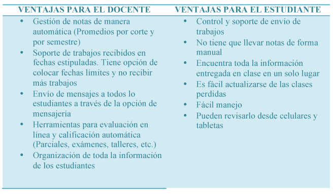

Educación a Distancia
Síguenos
Eco TIC

SAVIO: aliado estratégico para la gestión de clases
La tecnología ha llegado para quedarse y adentrarse en todos los escenarios de la vida de los seres humanos, entre ellas la educación. Por otro lado, los procesos entre docentes y estudiantes son cada vez más exigentes, pues requieren de rapidez, transparencia y sobretodo veracidad.
Con base en lo anterior, tecnología y educación son la combinación perfecta para optimizar el proceso de enseñanza-aprendizaje en pleno S.XXI, sobre en la creciente generación de los llamados “nativos digitales”, para quienes son parte natural de su mundo.
Una de las herramientas más útiles en la gestión docente de clases son las plataformas educativas, las cuales facilitan la gestión de la información y el seguimiento de procesos a los estudiantes.En la Universidad Tecnológica de Bolívar contamos con SAVIO (Sistema de Aprendizaje Virtual interactivo). Luego de tener 3 años usando la plataforma, comparto con ustedes las razones que hacen de SAVIO el mejor aliado estratégico para la gestión de clases:


Coordinación de Educación a Distancia
Universidad Tecnológica de Bolívar Copyright © 2013 - Cartagena - Bolívar - Colombia
Parque Industrial y Tecnológico Carlos Vélez Pombo, Km 1 Vía Turbaco. - Pbx: 57-5-6535200 - Fax: 57-5- 6619240.
Campus Casa Lemaitre: Calle del Bouquet cra.21 #25-92, barrio Manga - Tels.: (5) 6606041-42-43